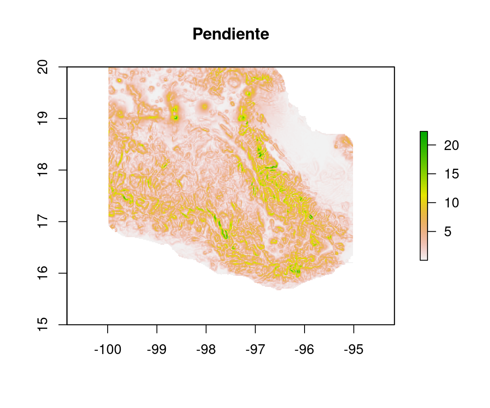

5 Unidad III - Aplicaciones del modelo digital de elevación
5.1 Desarrollo de un modelo digital de elevación
Un modelo digital de elevación es un a representación ráster de la elevación sobre el nivel del mar de la superficie terrestre. La información sobre la elevación es muy importante para el análisis del clima, topografía e hidroligía. En climatología, la elevación está muy relacionada con las temperaturas y las lluvias. En topografía, la elevación se puede utiizar para encontrar la inclinación o pendiente de un terreno, el aspecto, o dirección de la inclinación y capacidad para almacenar agua. En hidrología la elevación se puede utilizar para estimar el tamaño potencial de los cuerpos de agua, la velocidad o fuerza con que puede descender el agua de una montaña, identificar ríos y zonas inundables. La aplicaciones del modelo digital de elevación en topografía e hidrología se conoce como Geomorfología.
Figura 5.1: Modelo digital de elevación
Los modelos digitales de elevación, además de contener explícitamente información sobre la altura promedio por píxel, contienen información sobre elementos del paisaje, como la presencia de ríos. De hecho para el desarrollo de modelos digitales de elevación puede llegar a utilizarse dicha información. Los modelos digitales de elevación pueden ser desarrollados tanto por medio de interpolación, como por el análisis y procesamiento de imágenes satelitales.
El sensor remoto utilizado para los modelos digitales de elevación es el Shuttle Radar Topography Mission (SRTM), y sus productos están disponbles libres de costo al público en general con una resolución de 30m (¡treinta metros!).
Para la creación de modelos digitales de elevación de mayor resolución se necesita utilizar otras metodologías, combinando interpolación de puntos y datos vectoriales (de ríos, viviendas p. ej.).
5.1.1 Tutorial de desarrollo de MDE
Este tutorial consiste de la interpolación de unos puntos con mediciones de elevación en QGIS (el tutorial original es parte de una capacitaicón en QGIS). Además de la interpolación, vamos a utilizar una capa de ríos para dotar de información topográfica a las interpolaciones. Los datos del tutorial los encuentras en esta liga.
Los datos disponibles son:
- Puntos con mediciones de altura
- Líneas de ríos/riachuelos
- Líneas de ruptura-contorno
El modelo de interpolación que permite interpolar a partir de estas estructuras se llama TIN (triangular irregular networks).
Comencemos abriendo todas las capas en QGIS (todas en la misma ventana). En el panel de Caja de procesos, buscamos TIN, y damos doble click para ver la siguiente ventana:

vamos a comenzar simplemente interpolando las mediciones de elevación de los puntos. Y después interpolaremos con las curvas y finalmente con los ríos, para comparar los resultados.
Para interpolar con los puntos, líneas o curvas, seleccionamos la capa que utiizaremos para interpolar del menú Capa Vector, y luego la columna de datos de esa capa que interpolaremos. En la caja de abajo, tenemos que añadir si la capa se utilizará como puntos, líneas de estructura o de ruptura, o como todas ellas. Posteriormente seleccionamos si el método de interpolación será lineal o Clough-Toucher (produce cambios más suaves que lineal). Finalmete seleccionamos la extensión espacial a partir de una de las capas vectoriales que tenemos abiertas y la resolución (no de píxeles en filas y columnas).
5.2 Cálculo de parámetros morfométricos
La geomorfometría comprende una serie de análisis para describir la topografía de la superficie terrestre, generalmente a partir de un modelo digital de elevación. Los cálculos morfométricos básicos del terreno son:
- Pendiente
- Superficie
- Aspecto
- Área
- Sombreado
Estas características del terreno (superficie terrestre) tienen una base matemática sólida en el cálculo y geometría diferencial. En este sentido matemático, el terreno es concebido matemáticamente como una superfice con tres dimensiones \(x\) o longitud, \(y\) o latitud y \(z\) o elevación. La mayoría de los cálculos entonces se basan en los cambios de \(z\) con respecto de \(x\) y \(y\).
A diferencia del cálculo de dos variables, para la geomorfometría se utiliza el cálculo para tres variables, lo que resulta en derivadas parciales (\(\partial z / \partial x\)), pues sólo es posible derivar una variable con respecto de otra, no con respecto de dos variables simultáneamente.
Aunque los cálculos nos puedan parece complicados, no es necesario poderlos ejecutar a mano, pues ya están implementados en el poderosísimo paquete raster.
5.2.1 Pendiente
Es la inclinación del terreno, o el cambio de altura entre los vecinos de ese píxel. Debido a que los cambios de inclinación ocurren en dos dimensiones \(x\) y \(y\), tradicionalmente la pendiente es el máximo de \(\left(\frac{\partial z}{\partial x}, \frac{\partial z }{\partial y}\right)\)
5.2.2 Superficie
Como hemos visto anteriormente los píxeles tienen un tamaño fijo, por ejemplo de \(1 \times 1\) km. Sin embargo, la superficie real está determinada por las características del terreno (rugosidad, inclinación, p. ej.). Un terreno inclinado tendrá mayo superficie al píxel que lo contiene, mientras que un terreno sin pendiente tendrá la misma superficie.
5.2.3 Aspecto
Es el ángulo medido en radianes (\(\pi = 180°\)) en dirección antihorario formado por la inclinación del terreno y el norte geográfico
5.2.4 Sombreado
Son el conjunto de sombras topográficas proyectadas por la luz solar sobre el terreno con un ángulo (hora del día) e inclinación determinadas. A diferencia de los cálculos morfométricos anteriores no tienen tantas aplicaciones técnicas en hidrología, sin embargo el sombreado de relieve es un parámetro visual importante en cartografía.
5.2.5 Cálculo de los parámetros morfométricos en R
Todos los parámetros básicos que se han descrito hasta este momento, se llaman de primera derivada, pues utilizan la primera derivada de \(z\) con respecto de \(x\) y \(y\). Algunos de ellos se pueden calcular con la función terrain del paquete raster. Otros, son derivados de los parámetros calculados con terrain. Lo primero que necesitamos es un modelo digital de elevación, el cual pueden descargar aquí. Ahora ya conocemos el procedimiento para cargar los datos en el espacio de trabajo de R, por lo que nos lo podemos saltar e ir directo al cálculo de los parámetros.
Figura 5.2: Modelo digital de elevación para México central
Para la pendiente:
pendiente <- terrain(dem, opt="slope", unit="degrees")
plot(pendiente, main = "Pendiente")
Para el aspecto:
aspecto <- terrain(dem, opt = "aspect", unit = "degrees")
plot(aspecto, main = "Aspecto")La superfice se puede obtener con la pediente y el área del píxel, el cual en este caso es de 1 \(\mathrm{km}^2\):
superficie <- 1/cos(pendiente*(pi/180))
plot(superficie, main = "Superficie")Para el sombreado, necesitamos la pendiente y aspecto, con la función hillShade:
sombra <- hillShade(slope = pendiente,
aspect = aspecto,
angle = 135,
direction = 315,
normalize = F)
plot(sombra, main = "Sombra de relieve", col=grey(30:100/100))